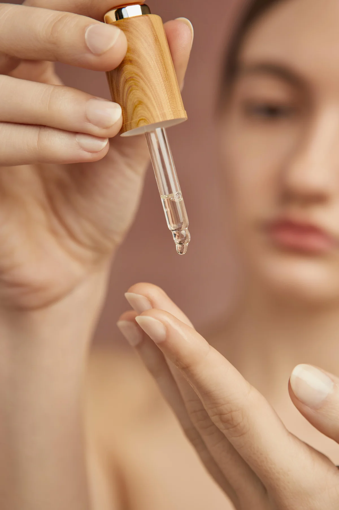

Megereszkedett, rugalmatlan bőr
A feszesség változása hatással lehet az arckontúrokra és a ráncok megjelenésére.
A bőröd egyedi, ezért a kezeléseidnek is annak kell lenniük. Legyen szó bőrfiatalításról, hidratálásról vagy aknéval küzdő bőr ápolásáról, a személyes konzultáción a te igényeidből indulunk ki.
Időpontot egyeztetek ↗
Az első alkalommal átbeszéljük a bőröd állapotát, és együtt nézzük meg, milyen kezelési irány illik hozzád.
A feszesség változása hatással lehet az arckontúrokra és a ráncok megjelenésére.

A pattanások, gyulladások és az utánuk maradó nyomok külön figyelmet igényelhetnek.
A bőr tónusa és ragyogása több tényező hatására is megváltozhat.

Az érzékenység, a bőrpír és a feszülő érzés a kezelési terv kialakításakor is fontos szempont.
A kezelést a bőröd aktuális állapota és a közösen megbeszélt célok alapján választjuk ki.
Az értékes növényi összetevők és a célzott hatóanyagok a bőr megújulását támogatják. A két kezelés érzékenyebb vagy hidratálásra vágyó bőr igényeihez igazítható.
A kozmetikai peptidekre épülő kezelések a bőr megjelenésének frissítését célozzák, plasztikai beavatkozás nélkül.
A kezelési tervhez az alábbi lehetőségek is szóba jöhetnek, a bőröd állapotához igazítva.
A kezelés célját mindig személyesen beszéljük át; a bőr reakciója egyénenként eltérhet.
A csomagok részleteit az első konzultáción átbeszéljük, és megnézzük, melyik illik a célodhoz.
79 000 Ft
Feszesebb, simább, üdébb bőr – kíméletes, célzott kezelésekkel.
99 000 Ft
Komplex bőrmegújítás személyre szabott figyelemmel.
59 000 Ft
Intenzív bőrtisztító program aknéval küzdő fiataloknak.
Öt alkalmas kúra esetén, ha nem vagy elégedett, a kezelés díjának 50%-át visszatérítem.
Keress bizalommal, és átbeszéljük, milyen lehetőségek illenek a bőröd igényeihez.